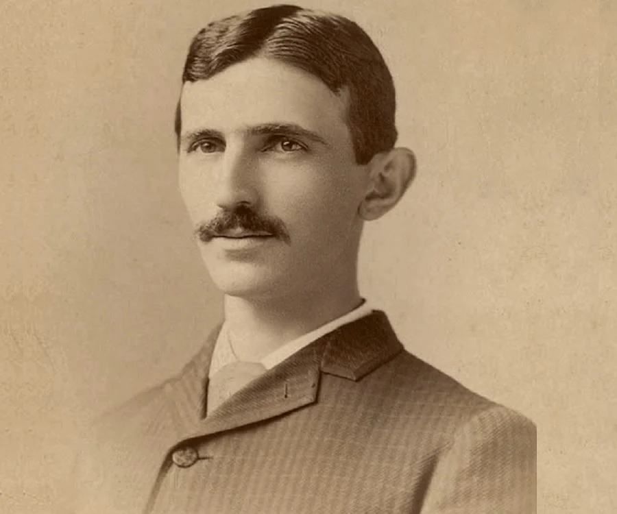
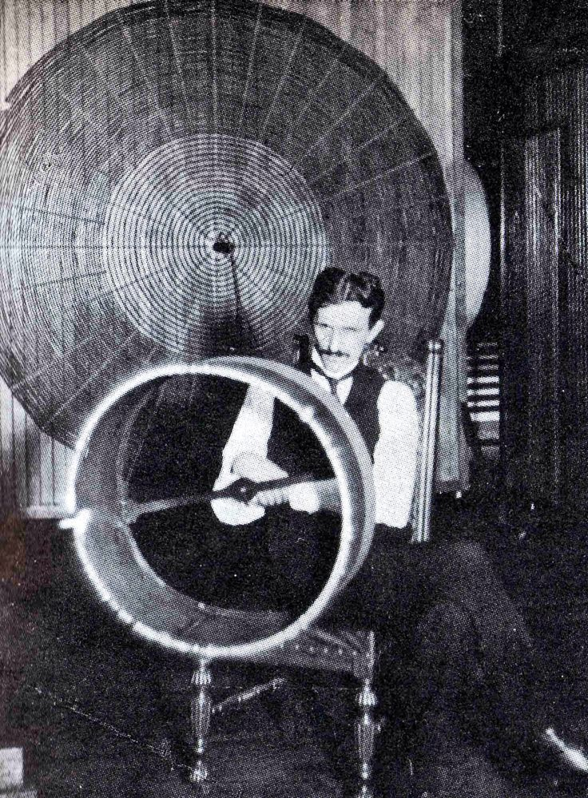
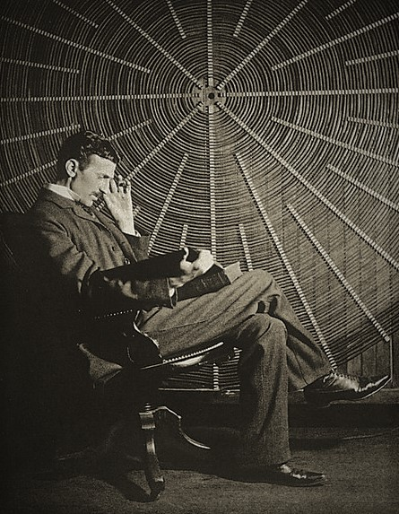
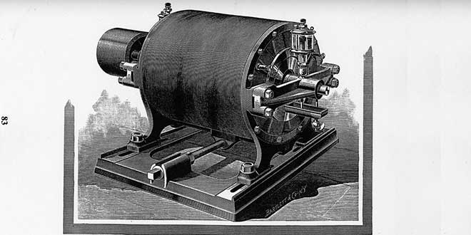
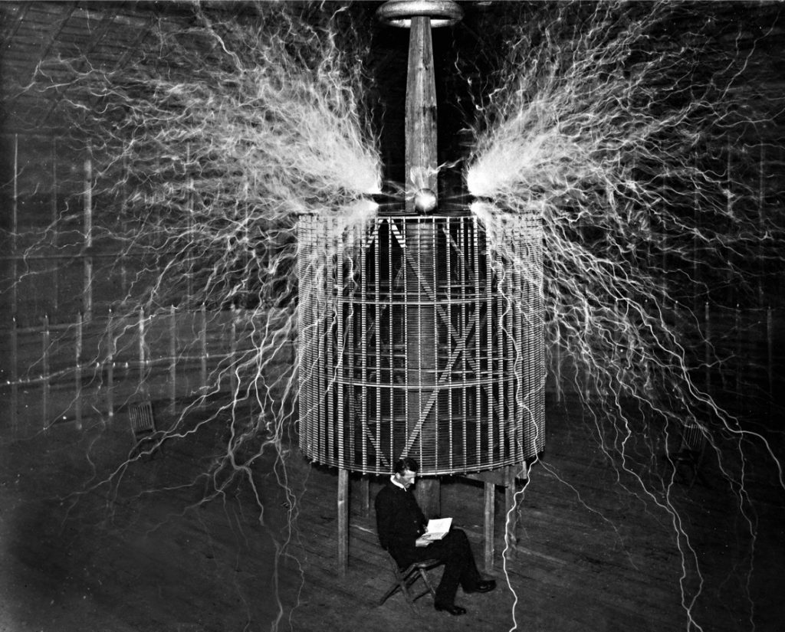
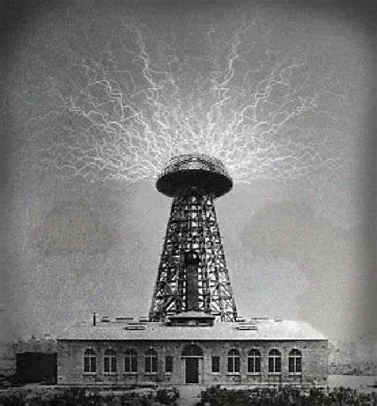
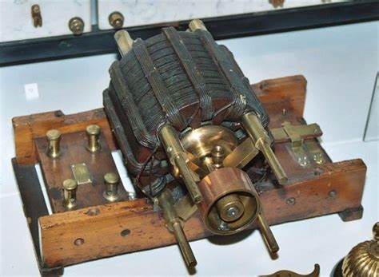
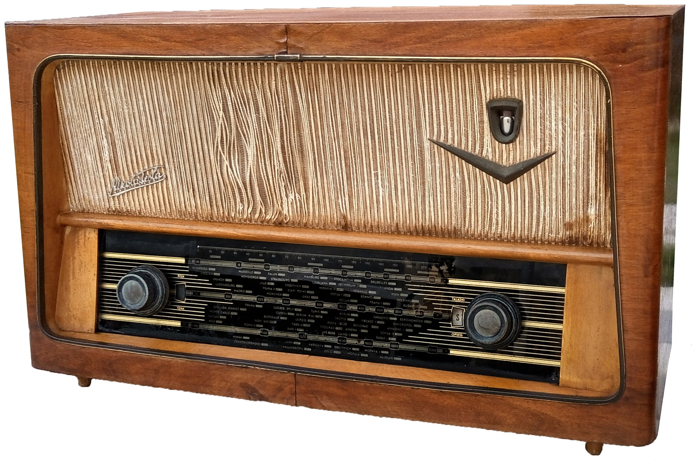
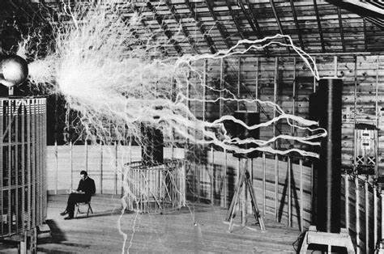
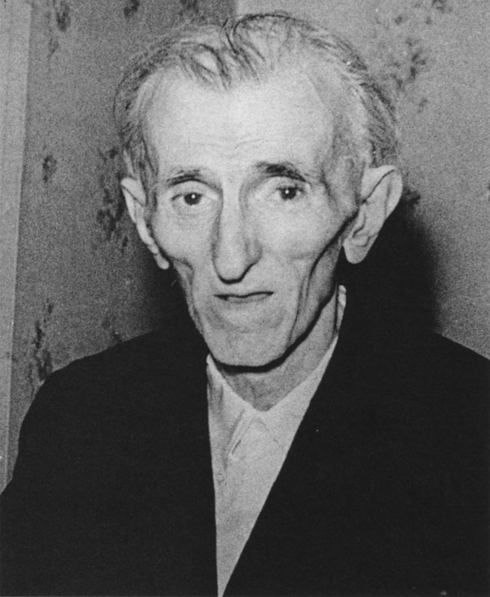

Introducción
Nikola Tesla es considerado uno de los científicos e inventores más brillantes y enigmáticos de la historia moderna. Nacido el 10 de julio de 1856 en Smiljan, una localidad del Imperio Austrohúngaro (hoy Croacia), desde temprana edad mostró un intelecto excepcional. Su fascinación por la electricidad y la mecánica lo llevó a convertirse en un pionero en el desarrollo de tecnologías que sentaron las bases de la era eléctrica.
Entre sus numerosas contribuciones se encuentra el sistema de corriente alterna (CA), que revolucionó la transmisión de electricidad, haciéndola más eficiente y accesible. Además, sus inventos, como la bobina de Tesla y el diseño del motor de inducción, no solo demostraron su brillantez técnica, sino también su visión futurista de un mundo interconectado. A pesar de sus logros, la vida de Tesla estuvo marcada por la soledad y las dificultades económicas, un contraste doloroso con su inmensa visión para el futuro de la humanidad.
Tesla no solo fue un innovador en el campo de la electricidad; también exploró conceptos como la transmisión de energía inalámbrica, la radio y la comunicación a larga distancia, anticipando tecnologías que aún hoy son fundamentales. Su vida y legado son testimonio de un genio cuya influencia se siente en la actualidad, inspirando a generaciones de científicos e ingenieros a seguir explorando los límites del conocimiento y la tecnología.
Vida Temprana y Educación
Nikola Tesla nació el 10 de julio de 1856 en Smiljan, una pequeña localidad del Imperio Austrohúngaro, en la actual Croacia. Desde su infancia, mostró una curiosidad insaciable por el mundo que lo rodeaba. Su madre, Georgina, era inventora autodidacta y le enseñó a apreciar la creatividad y la innovación, mientras que su padre, Milutin, era un sacerdote ortodoxo que esperaba que su hijo se dedicara a la literatura. Este conflicto de intereses influyó en la vida de Tesla, que se sintió atraído por la ciencia desde una edad temprana.
Durante su infancia, Tesla sufrió de enfermedades que lo mantuvieron alejado de la escuela, lo que le permitió pasar más tiempo explorando su entorno y experimentando con diferentes conceptos científicos. A los 14 años, ingresó en la Escuela Técnica de Graz, donde comenzó a estudiar ingeniería eléctrica. Allí, desarrolló un interés profundo por la electricidad y la física, aunque se enfrentó a dificultades académicas debido a su naturaleza perfeccionista y su tendencia a no completar sus tareas.
Tras un breve paso por la Universidad de Praga, Tesla se trasladó a París en 1882, donde comenzó a trabajar para la compañía Continental Edison. En este entorno, se vio influenciado por el trabajo de Thomas Edison y sus innovaciones en la corriente continua (CC). Sin embargo, Tesla pronto se dio cuenta de que tenía una visión diferente sobre cómo debería desarrollarse la electricidad y comenzó a concebir su propio sistema de corriente alterna (CA), que más tarde se convertiría en su mayor contribución al mundo de la tecnología.
A pesar de no haber completado formalmente su educación universitaria, la curiosidad y determinación de Tesla lo llevaron a convertirse en uno de los inventores más influyentes de la historia. Su capacidad para combinar teoría y práctica fue fundamental para su desarrollo como científico e inventor, sentando las bases para su futura carrera innovadora.
Inicio de su Carrera e Inventos
En 1884, Nikola Tesla emigró a los Estados Unidos con la esperanza de trabajar junto a Thomas Edison, quien ya era una figura prominente en el mundo de la electricidad. Al llegar a Nueva York, Tesla se unió a la compañía de Edison, donde inicialmente trabajó en mejoras para la corriente continua (CC). Sin embargo, pronto surgieron diferencias filosóficas entre ambos inventores; mientras Edison defendía la corriente continua, Tesla creía firmemente en el potencial de la corriente alterna (CA) para la transmisión de energía a larga distancia.
Descontento con su trabajo en la empresa de Edison, Tesla decidió dejar su puesto y buscar sus propias oportunidades. En 1887, estableció su propio laboratorio en Nueva York y comenzó a desarrollar su sistema de corriente alterna. Con el apoyo de inversores, como George Westinghouse, Tesla patentó su diseño para un motor de inducción que funcionaba con corriente alterna, así como otros dispositivos que transformaron el campo de la electricidad.
La "Guerra de las Corrientes" estalló a medida que Tesla y Westinghouse competían contra Edison y su sistema de corriente continua. A pesar de la feroz competencia, la superioridad técnica de la corriente alterna se hizo evidente, especialmente en términos de eficiencia en la transmisión de electricidad a largas distancias. La victoria de Tesla y Westinghouse en esta batalla culminó con la instalación de un sistema de corriente alterna en la Exposición Mundial de Chicago en 1893, donde su tecnología iluminó el evento, impresionando a miles de visitantes.
Además de su trabajo en corriente alterna, Tesla también realizó importantes contribuciones en el campo de la radio y la comunicación inalámbrica. En 1891, demostró la transmisión de energía inalámbrica mediante la bobina de Tesla, un dispositivo que generaba alta tensión y frecuencia. Esta innovación no solo sentó las bases para el desarrollo de la radio, sino que también anticipó el uso de tecnologías inalámbricas modernas.
A lo largo de su carrera, Tesla registró más de 300 patentes en diversas áreas, incluyendo electromagnetismo y energía. Su enfoque visionario y su inquebrantable deseo de innovar lo convirtieron en una figura icónica de la ingeniería eléctrica, dejando un legado que continúa inspirando a científicos e inventores en todo el mundo.
Invenciones y Contribuciones
Corriente Alterna (CA)
El sistema de corriente alterna fue sin duda una de las mayores contribuciones de Tesla. Su diseño permitía la transmisión de electricidad a largas distancias con menos pérdida de energía que el sistema de corriente continua de Edison. Este avance fue crucial para la electrificación de ciudades enteras y sentó las bases de la red eléctrica moderna. La capacidad de transformar voltajes mediante transformadores hizo que la corriente alterna se convirtiera en el estándar global para la distribución de electricidad.
La Bobina de Tesla
La bobina de Tesla fue un invento revolucionario en el campo de la electricidad. Este dispositivo genera alta tensión y frecuencia, siendo fundamental para el desarrollo de la radio, la televisión y otros dispositivos inalámbricos. A través de sus experimentos con la bobina de Tesla, él exploró la posibilidad de la transmisión de energía sin cables, sentando las bases para tecnologías inalámbricas modernas, como el Wi-Fi y el Bluetooth.
Torre Wardenclyffe
La torre Wardenclyffe fue quizás el proyecto más ambicioso de Tesla. Con esta estructura, planeaba transmitir energía inalámbrica a través del planeta, permitiendo a cualquier persona conectarse sin cables. Aunque el proyecto no pudo culminarse debido a problemas financieros, anticipó los sistemas de comunicación global modernos, como el internet y las redes de telecomunicaciones, y sigue siendo un símbolo de su visión innovadora.
Motor de Inducción
El motor de inducción de corriente alterna es otro de los logros más importantes de Tesla. Este motor, que utiliza el principio de la inducción electromagnética, permite convertir la energía eléctrica en energía mecánica de manera eficiente. Su diseño ha sido fundamental para la industria moderna, siendo utilizado en una amplia variedad de aplicaciones, desde electrodomésticos hasta maquinaria industrial.
Transmisor de Radio
Tesla también realizó contribuciones significativas al desarrollo de la radio. En 1893, demostró que las ondas electromagnéticas podían ser utilizadas para la transmisión de información a distancia. Aunque fue eclipsado por otros inventores en la carrera por la patente de la radio, sus experimentos sentaron las bases para futuras innovaciones en comunicaciones inalámbricas.
La Energía Inalámbrica
Uno de los sueños más ambiciosos de Tesla era la transmisión de energía inalámbrica. A través de experimentos realizados en su laboratorio, imaginó un futuro donde la electricidad pudiera ser enviada a dispositivos sin necesidad de cables. Aunque su visión nunca se realizó por completo, sus ideas han influido en tecnologías contemporáneas que buscan la eficiencia energética y la sostenibilidad.
Últimos Años y Caída en el Olvido
Durante sus últimos años, Tesla continuó trabajando en proyectos visionarios, aunque cada vez más aislado y con recursos limitados. A pesar de su mente innovadora, pasó los últimos años de su vida en hoteles de Nueva York, viviendo de una pequeña pensión proporcionada por la compañía Westinghouse en reconocimiento de sus contribuciones. Tesla murió el 7 de enero de 1943, solo y en relativa pobreza.
Muchos de sus inventos y patentes quedaron en el olvido, pero hoy se reconoce su influencia en campos que van desde la energía inalámbrica hasta la robótica y la ingeniería aeroespacial.
Legado
El legado de Nikola Tesla es vasto y continúa siendo objeto de investigación e inspiración para científicos e ingenieros en todo el mundo. Su visión de un mundo interconectado y energéticamente independiente resuena aún hoy, influyendo en diversas áreas de la ciencia y la tecnología.
Uno de los aspectos más fascinantes de su legado es cómo Tesla ha sido reivindicado póstumamente en las últimas décadas. Durante gran parte del siglo XX, sus contribuciones fueron eclipsadas por otros inventores, como Thomas Edison. Sin embargo, en los años recientes, ha surgido un renovado interés en su vida y obra, con numerosas biografías, documentales y películas que destacan su genialidad y aportes.
Tesla es también un símbolo de la innovación y la creatividad. Su nombre ha sido adoptado por diversas empresas y proyectos, siendo el más famoso el fabricante de automóviles eléctricos Tesla, Inc., que busca avanzar en la sostenibilidad y el transporte limpio, en línea con la visión de Tesla de energía limpia y accesible para todos. Si bien a día de hoy el CEO tiene un poco más imagen de payaso que de innovador, la intención inicial era continuar el legado de tesla por el uso de la energía eléctrica para un mejor futuro.
Además, en 2013, la Asamblea General de las Naciones Unidas proclamó el 10 de julio como el "Día de Nikola Tesla", celebrando sus contribuciones a la humanidad y promoviendo el interés por la ciencia y la educación técnica en todo el mundo.
En el ámbito de la cultura popular, Tesla ha inspirado obras de arte, literatura y música, convirtiéndose en un ícono del movimiento steampunk y de la cultura geek. Desde novelas hasta videojuegos, su figura se ha utilizado como símbolo de la lucha por la innovación y el pensamiento libre.
Datos interesantes sobre Tesla incluyen su fascinación por las palomas, a las que cuidaba y alimentaba en sus últimos años, y su creencia en la posibilidad de transmitir energía inalámbrica a través de la atmósfera. También es conocido por haber hecho una afirmación audaz en 1893, donde pronosticó que el siglo XXI sería la "Era de la Energía" y que la humanidad podría llegar a ser capaz de utilizar energía de forma ilimitada y gratuita.
Bibliografía
- Carlson, W. Bernard. Tesla: Inventor of the Electrical Age. Princeton University Press, 2013.
- Seifer, Marc J. Wizard: The Life and Times of Nikola Tesla. Citadel Press, 1998.
- O'Neill, John. Prodigal Genius: The Life of Nikola Tesla. Ives Washburn, 1944.
- Smith, Chris. The Man Who Invented the Twentieth Century: Nikola Tesla. New York: HarperCollins, 1998.
- Documental: Tesla: Master of Lightning, 2000. Producido por PBS.